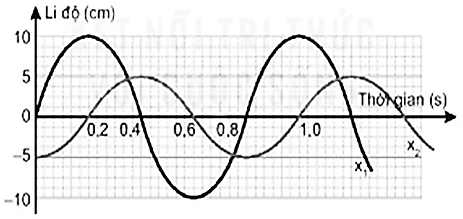
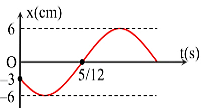

Luyện tập
Bài 2 · Đúng / Sai · phần 4
Bài 2 · Mô tả dao động (đồ thị, độ lệch pha) · 2 câu
Trắc nghiệm
Đúng / Sai
Trả lời ngắn
Tự luận
⌂ Trang chủ
1
2
3
4
PHẦN II. Câu trắc nghiệm đúng sai
Trong mỗi ý a), b), c), d) chọn Đúng hoặc Sai. Đúng 1 ý: 0,1 · 2 ý: 0,25 · 3 ý: 0,5 · 4 ý: 1,0 điểm.
1
Vận dụng cao
Đồ thị li độ theo thời gian $x_1$, $x_2$ của hai chất điểm dao động điều hòa được mô tả như hình bên dưới

a)
Quãng đường vật 1 đi được trong một chu kì là 40 cm.
Đúng
Sai
b)
Độ dịch chuyển vật 2 đi được từ thời điểm $t_1 = 0$ đến $t_2 = 0{,}4$ s là 0 cm.
Đúng
Sai
c)
Dao động vật 1 sớm pha hơn dao động vật 2.
Đúng
Sai
d)
Độ lệch pha giữa hai dao động $\frac{\pi}{2}$ rad.
Đúng
Sai
Kiểm tra
2
Vận dụng cao
Một vật dao động điều hòa có đồ thị biểu diễn sự phụ thuộc của li độ $x$ vào thời gian $t$ như hình bên.

a)
Chu kì của vật $T = 1$ s.
Đúng
Sai
b)
Tại thời điểm $t = 0$: $\varphi=-\frac{2\pi}{3}$ rad.
Đúng
Sai
c)
Tốc độ dao động cực đại: $v_{max}=12$ cm/s
Đúng
Sai
d)
Phương trình vận tốc của vật là $v=12\pi\cos(2\pi t-\frac{5\pi}{6})$ cm/s.
Đúng
Sai
Kiểm tra
Làm lại
Nộp kết quả
Bắt đầu luyện tập
Nhập thông tin để hệ thống ghi nhận kết quả.
Họ và tên
Lớp
Bắt đầu
Luyện tập không ghi tên
Nhắc giờ
Đã hiểu